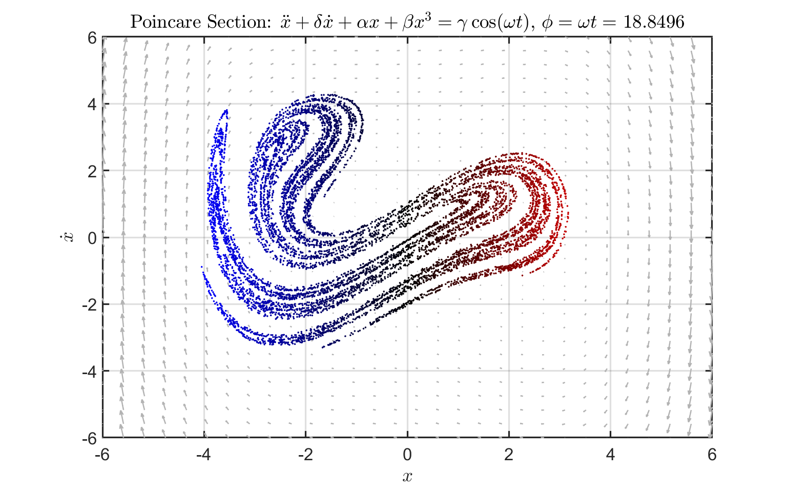

Contents
Driven Duffing Oscillator
Author: Tyler Jones Contact: tjjones6@wisc.edu Date: 04.09.2024

%{ This MATLAB script models the behavior of a driven Duffing oscillator, a nonlinear dynamical system common in engineering and physics. By numerically solving the Driven Duffing Equation using MATLAB's ode45 solver, it generates a Poincaré section plot, illustrating the oscillator's phase space dynamics. See the following for more info: <https://en.wikipedia.org/wiki/Duffing_equation> Steven H. Strogatz: Nonlinear Dynamics and Chaos %} clear all; close all; clc;
Parameter Library and User Input
%{ Driven Duffing Oscillator Equation: $\ddot{x} + \delta\dot{x} + \alpha x + \beta x^{3}=\gamma \cos(\omega t)$ alpha: Coefficient of linear damping beta: Coefficient of cubic damping gamma: Amplitude of external driving force omega: Angular frequency of external driving force delta: Coefficient of velocity damping %} % alpha = -1; % beta = 1; % gamma = 0.6; % omega = 1.5; % delta = 0.3; alpha = -1; beta = 0.25; gamma = 2.5; omega = 2; delta = 0.1; % Period Definition % NOTE: For t_period, "1000*T" controls the density of Poincaré Map T = 2*pi/omega; % Period of solution t_period = (0:T:10000*T)'; % Periodic time vector % Initial Condition (x,x_dot,phi) y0 = [1; 0; 0]; % Initial data/condition: (x=1, x_dot=0, phi=0) % Axis Controls b = 6; axis_controls = [-b b]; bound = b;
Vector Field Generation
%{ This section computes the vector field for the driven Duffing oscillator, defining functions for the first-order differential equations of position and velocity. It then generates a grid of x and y values and evaluates the velocity components. %} % First order system x_dot = @(x,y) y; v_dot = @(x,y,t) gamma*cos(omega*t) - delta*y - alpha*x - beta*x.^3; % Generate grid and mesh for velocity vectors. % NOTE: VV is defined and updated in the loop since it is time-dependent xx = linspace(-bound,bound,30); yy = linspace(-bound,bound,30); [XX,YY] = meshgrid(xx,yy); UU = x_dot(XX,YY);
Simulation and Visualization Loop
%{ This section initializes a figure for visualization and sets up parameters for the simulation, including defining the Duffing equation using anonymous functions and configuring video writing settings. It iterates through increasing values of the phase angle `phi`, and plotting the resulting Poincaré section. System Definition: \dot{x} = v \dot{v} = \gamma\cos(\omega) - \delta\dot{x} - \alpha x - \beta x^3 \dot{\phi} = \omega %} figure('units','normalized','Position',[0.1 0.1 .8 .8]) % Solve Duffing Equation via ODE45 Duff_Eq = @(t, Y) [Y(2); gamma*cos(Y(3)) - delta*Y(2) - alpha*Y(1) - beta*Y(1).^3; omega]; % myWriter = VideoWriter('DuffingEquation3.mp4', 'MPEG-4'); % myWriter.FrameRate = 60; % open(myWriter); % Iterate over increasing values of phi angular_res = 100; % Resolution for sweeping phi phi_final = 6*pi; % Final angle for phi = linspace(0, phi_final, angular_res) clf % Update the initial condition with the current phi y0(3) = phi; VV = v_dot(XX,YY,phi*T); % ODE45 Solver [t, Y] = ode45(Duff_Eq, t_period, y0); % Assign intersection colors based on normalized x values x_values = Y(2:end,1); x_max = max(abs(x_values)); normalized_x = x_values/x_max; colors = zeros(length(x_values), 3); colors(:, 1) = normalized_x; colors(:, 3) = -normalized_x; % Plot the Poincaré section (x vs. x_dot) quiver(XX,YY,UU,VV,'Color',[0.7,0.7,0.7],'LineWidth',1.5); hold on %plot(Y(2:end,1), Y(2:end,2), 'MarkerSize', 5) scatter(Y(2:end,1), Y(2:end,2), 5, colors, 'filled') grid on fig_xytit('$x$','$\dot{x}$') title(['Poincare Section: $\ddot{x} + \delta\dot{x} + \alpha x + \beta x^3 = \gamma \cos(\omega t)$, $\phi = \omega t = $ ', num2str(phi)],'Interpreter','latex'); % Add iteration step of phi to title xlim(axis_controls) ylim(axis_controls) hold off pause(0.01) % frame = getframe(gcf); % writeVideo(myWriter,frame); end % close(myWriter)
Plotting Reference Functions
function myfigpref % MYFIGPREF just makes figures pretty. Written by TGJChandler % % Last edited: 01/01/2018 by TGJChandler % % Comment by Tyler Jones: Thomas Chandler was my professor for math % 415 (Applied Dynamical Systems, Chaos, and Modeling) @UW-Madison set(0, 'DefaultAxesFontSize', 20) set(0, 'DefaultAxesLineWidth', 2); set(0, 'DefaultLineLineWidth', 2); set(0, 'DefaultPatchLineWidth', .7); set(0, 'DefaultLineMarkerSize', 6); grid on; box on; h = gca; h.TickLabelInterpreter='latex'; h.MinorGridAlpha=0.05; h.GridAlpha=0.05; h.FontSize=25; h.LineWidth=2; h = gcf; h.Color = [1,1,1]; end function fig_xytit(xlab, ylab, tit) % FIG_XYTIT sets the current figure's xlabel, ylabel, and title % in latex format. % % Last edited: 15/06/2021 by TGJChandler if nargin<3 tit = ''; end xlabel(xlab,'interpreter','latex') ylabel(ylab,'interpreter','latex') title(tit,'interpreter','latex') end